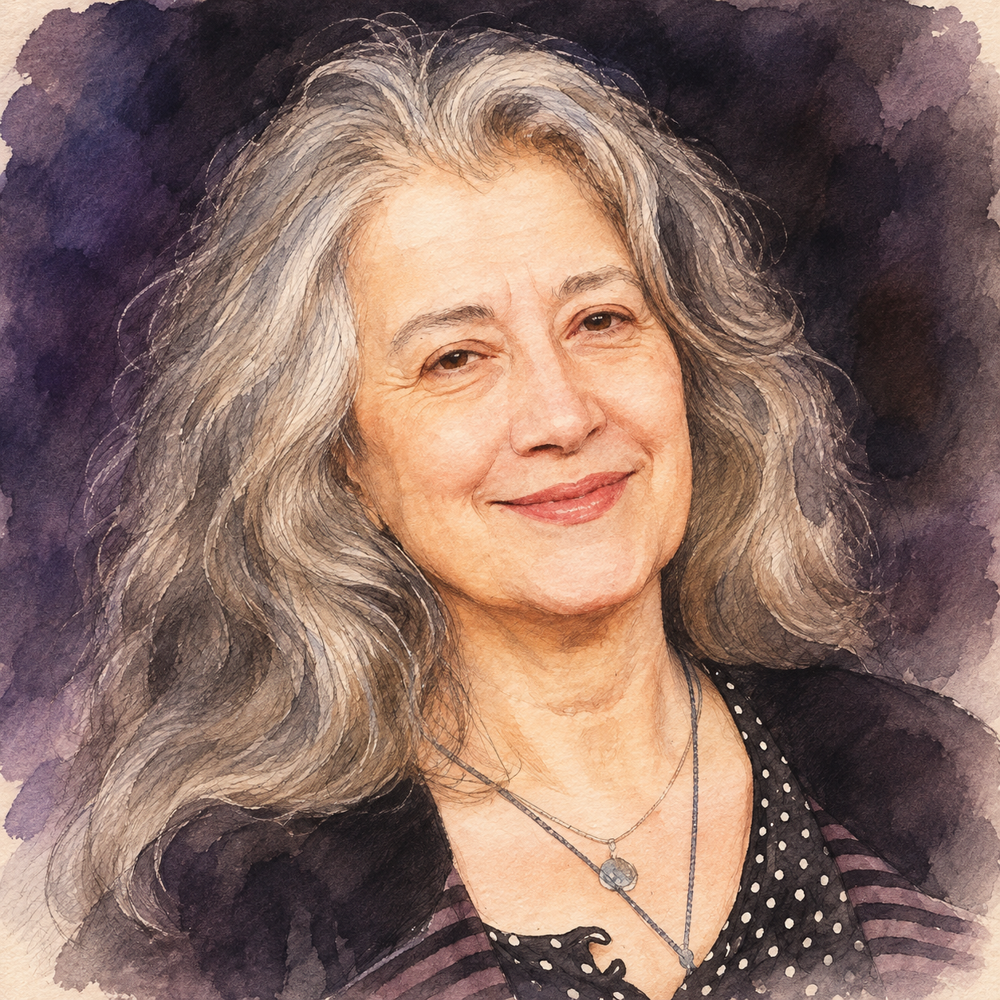
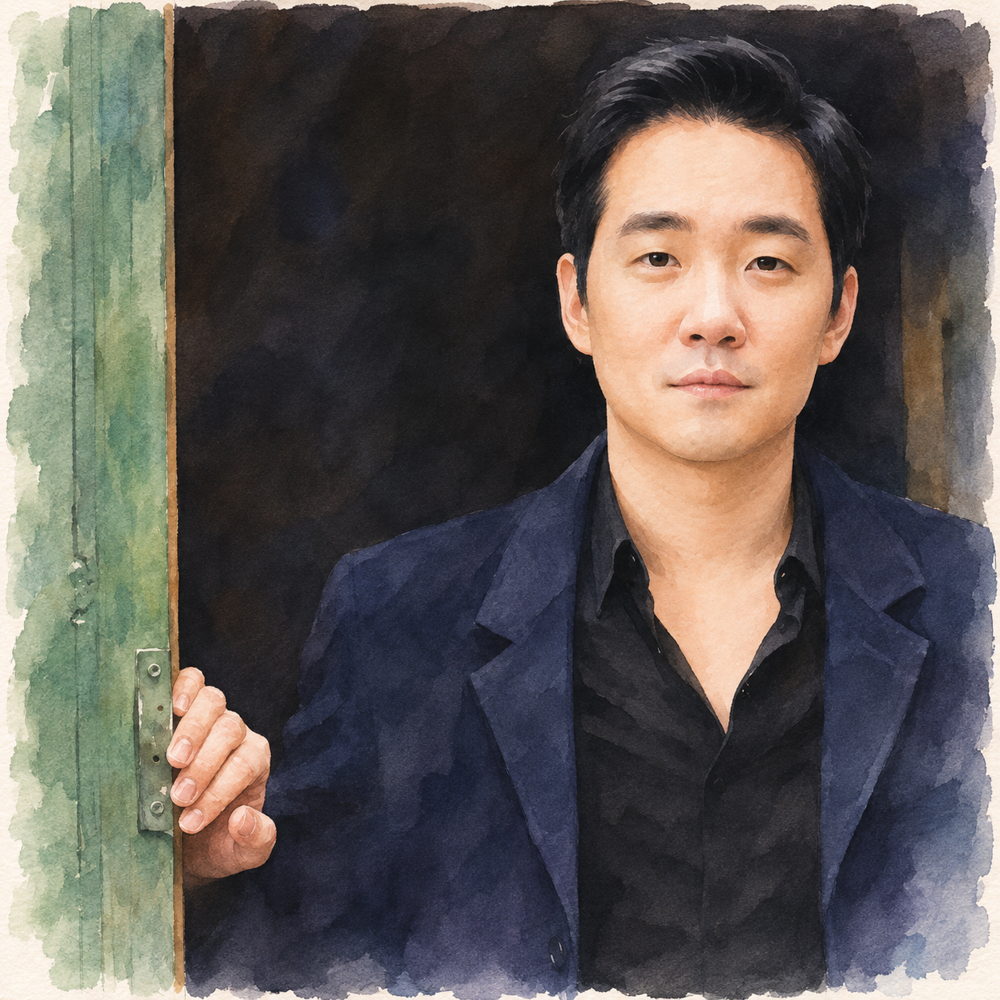
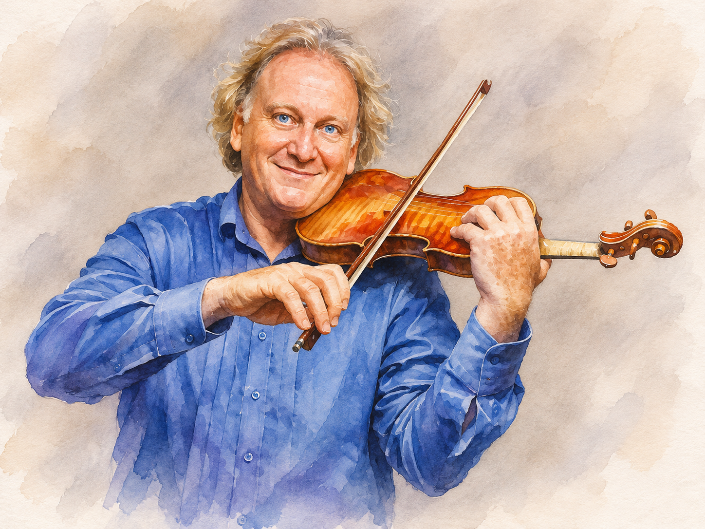
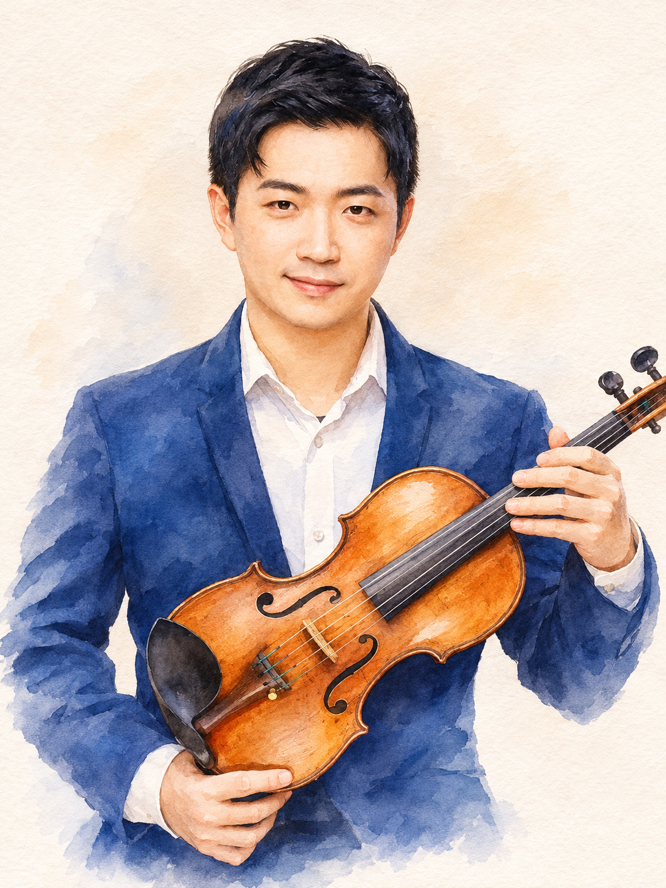
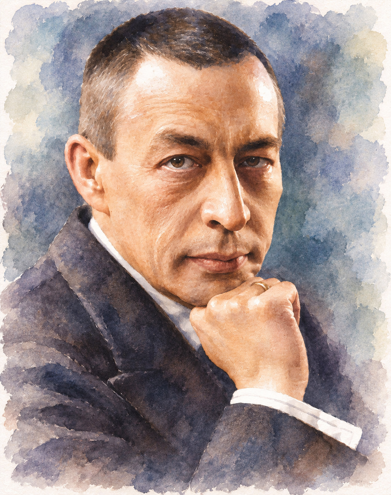
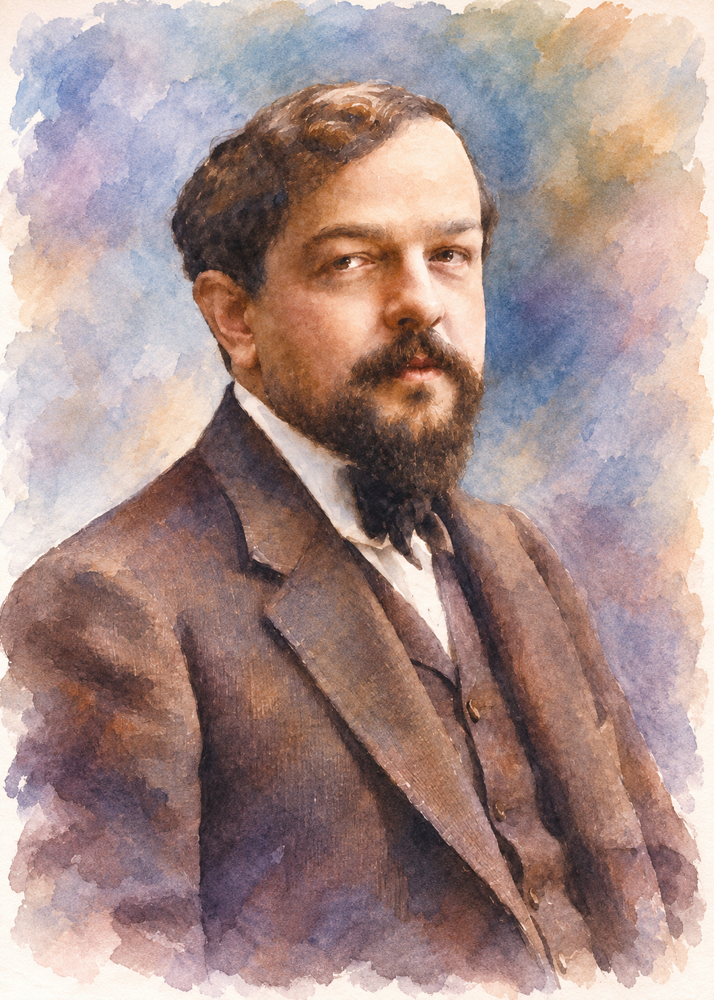
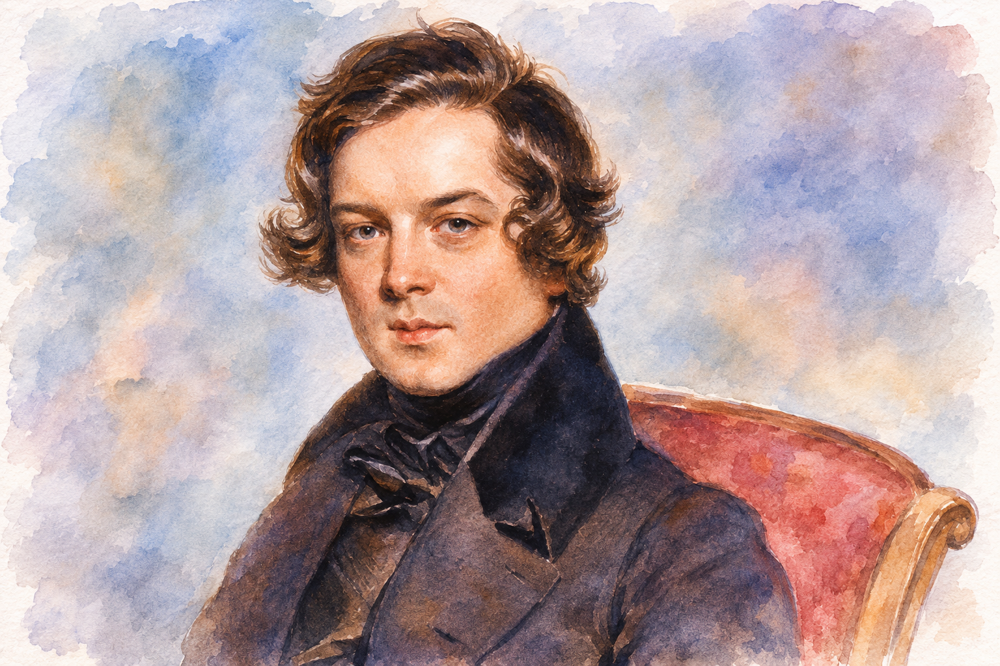
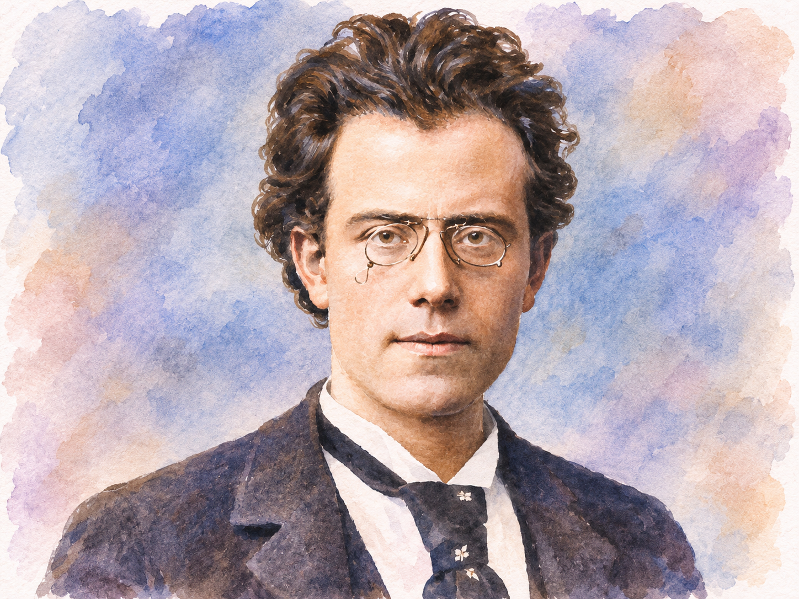
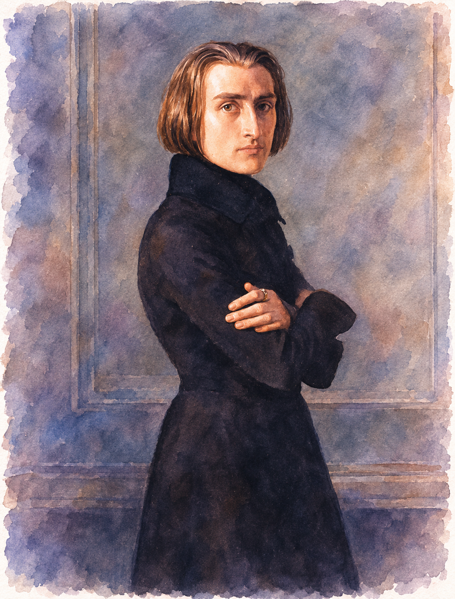

沒有指揮與大樂團的下午
臺北與高雄兩場以協奏曲為主，獨奏者面對的是整個交響樂團；屏東場改為室內樂，沒有指揮與大型樂團。兩架鋼琴、鋼琴與弦樂三重奏、鋼琴五重奏等不同組合，讓每個人都同時是主奏、伴奏與聆聽者。鋼琴的聲音衰減較快，弦樂能維持長線條；誰接住一個主題、誰把音量讓出來，會比「誰彈得最大聲」更重要。
| 曲目 | 本場配置 | 可先抓住的線索 |
|---|---|---|
| 拉赫曼尼諾夫《交響舞曲》Op.45，雙鋼琴版 | Martha Argerich、Dong Hyek Lim | 以兩架鋼琴重建管弦樂的低音、旋律與節奏層次。 |
| 莫札特 K.478 鋼琴四重奏 | Theodosia Ntokou、Yossif Ivanov、Lyda Chen Argerich、Jing Zhao | 鋼琴和三件弦樂器的主題交接；G 小調與 G 大調的性格轉換。 |
| 德布西大提琴奏鳴曲 | Martha Argerich、Jing Zhao | 大提琴的撥奏、拉奏與鋼琴留白。 |
| 舒曼鋼琴五重奏 | Martha Argerich、Yossif Ivanov、William Wei、Lyda Chen Argerich、Jing Zhao | 鋼琴和弦樂四重奏之間的大音響與細密對位。 |
| 馬勒 a 小調鋼琴四重奏樂章 | Theodosia Ntokou、Michael Guttman、Lyda Chen Argerich、Jing Zhao | 青年馬勒的濃厚浪漫和聲；唯一完整保留的樂章。 |
| 李斯特《唐璜回憶錄》，雙鋼琴版 | Martha Argerich、Theodosia Ntokou | 歌劇旋律、變奏與炫技音群如何由兩架琴分工。 |
朋友們如何組成不同的聲音

阿格麗希 1941 年生於布宜諾斯艾利斯，1965 年獲華沙蕭邦國際鋼琴大賽首獎。她的演奏以敏捷技巧、明確節奏與多變音色聞名，也持續投入雙鋼琴與室內樂。屏東一場裡，她從拉赫曼尼諾夫雙鋼琴、德布西大提琴奏鳴曲、舒曼五重奏一路演到李斯特雙鋼琴，合作對象從年輕鋼琴家到弦樂組合。
| 音樂家 | 本場角色 | 脈絡 |
|---|---|---|
| Dong Hyek Lim | 拉赫曼尼諾夫第二鋼琴 | 南韓鋼琴家；和阿格麗希共同承擔原作管弦樂的節奏、旋律與層次。 |
| Theodosia Ntokou | 莫札特、馬勒鋼琴；李斯特第二鋼琴 | 希臘鋼琴家，長期與阿格麗希合作，曾共同錄製貝多芬《田園》四手聯彈版。 |
| Michael Guttman | 馬勒小提琴 | 比利時小提琴家，也從事室內樂與音樂節策劃。 |
| Yossif Ivanov | 莫札特、舒曼小提琴 | 曾獲蒙特婁國際音樂大賽首獎、伊莉莎白女王國際音樂大賽第二名；舒曼中和另一把小提琴分擔聲部模仿。 |
| William Wei | 舒曼第二小提琴 | 臺灣小提琴家；舒曼五重奏中，五人需在豐富鋼琴音響與弦樂對位裡保持平衡。 |
| Lyda Chen Argerich | 莫札特、舒曼、馬勒中提琴 | 原學小提琴，後轉中提琴；中提琴常連接高低聲部，也會取得獨立旋律。 |
| Jing Zhao | 莫札特、德布西、舒曼、馬勒大提琴 | 2005 年慕尼黑 ARD 大賽大提琴組首獎，為阿格麗希長期室內樂夥伴。 |



拉赫曼尼諾夫：《交響舞曲》Op.45，雙鋼琴版

1940 年創作；約 30–35 分鐘。鋼琴：Martha Argerich、Dong Hyek Lim。這是拉赫曼尼諾夫最後完成的大型作品；有管弦樂版，也有作曲家自己的雙鋼琴版。雙鋼琴不是把管弦樂譜簡單分給四隻手，而是以兩台琴重新建構低音、旋律和多層節奏，要求演奏者精確分配重音與音量。
I. Non allegro
短促節奏帶著推進力，之後轉入較抒情旋律；全樂章在強烈節奏和舒展歌唱間交替。中段長旋律浮在分散伴奏上；管弦樂版這段由薩克斯風演奏，能幫助想像原本的音色。
阿格麗希、Nicolas Economou：第一樂章錄音 ↗
II. Andante con moto
帶有圓舞曲三拍脈動，但重音常偏離預期，不是規整優雅的舞會圓舞曲。低音、和聲與高音旋律交疊，讓舞步忽近忽遠。
III. Lento assai — Allegro vivace
神祕的慢速序奏轉入節奏強烈的終曲，可聽見與《末日經》相关的音型，後段又出現帶勝利意味的明亮材料；宗教和戲劇性的對照推向最後高潮。
莫札特：G 小調第一號鋼琴四重奏，K.478
1785 年創作；約 25–30 分鐘。鋼琴：Theodosia Ntokou；小提琴：Yossif Ivanov；中提琴：Lyda Chen Argerich；大提琴：Jing Zhao。成熟時期的 G 小調作品，性格比人們熟悉的輕巧莫札特嚴肅。鋼琴不是附屬弦樂、也不是單方面帶領，而是四件樂器共同推進音樂。
I. Allegro
節奏鮮明的 G 小調主題立即帶出緊張；短小動機和和聲轉折推動樂句，鋼琴與弦樂有時共同強調主題，有時分開回答。
II. Andante
轉為降 B 大調，旋律平靜；鋼琴和三件弦樂器接續主題，鋼琴短句有時成為弦樂線條的一部分。伴奏簡潔，聲部交接能否不中斷尤其要緊。
III. Rondo: Allegro
終樂章回到 G 大調，氣氛明顯輕快。主要主題反覆歸來，中間插段帶來不同情緒與調性；聽每次主題回來時，鋼琴與弦樂的伴奏、配器有何不同。
德布西：D 小調大提琴奏鳴曲，L.135

1915 年創作；約 11–13 分鐘。鋼琴：Martha Argerich；大提琴：Jing Zhao。第一次世界大戰期間寫成的晚期作品。三段緊密連接，大提琴除了歌唱，也使用撥奏、短促音型和突變音色；鋼琴不是厚重背景，而以和聲、節奏和留白塑造空間。
I. Prologue: Lent, sostenuto e molto risoluto｜00:00
慢速開頭莊重而節制。大提琴短句有時像宣敘調，不總是拉成長旋律；鋼琴和聲與停頓也是音樂的一部分。
II. Sérénade: Modérément animé｜04:13
撥奏與不尋常音型使音樂機智、略帶怪誕，速度和音色變化很密集；可直接比較 pizzicato 和 arco 的不同質地。
III. Finale: Animé, léger et nerveux｜07:33
終曲緊接前段，節奏更活躍；大提琴和鋼琴在快速對答中交替帶領，同時維持清楚音色。
舒曼：降 E 大調鋼琴五重奏，Op.44

1842 年創作；約 30 分鐘。鋼琴：Martha Argerich；小提琴：Yossif Ivanov、William Wei；中提琴：Lyda Chen Argerich；大提琴：Jing Zhao。鋼琴加標準弦樂四重奏，既能有近似協奏曲的強大音響，也能轉入細密聲部對話。作品題獻給克拉拉；1842 年一次私人試演時她因病未能彈奏，孟德爾頌臨時代奏。
I. Allegro brillante｜00:04
雄壯齊奏主題後轉入抒情材料；鋼琴快速音型與弦樂合奏交替，力量和室內樂式分工並存。
II. In modo d'una marcia｜08:45
節制而沉重的進行曲，低音與中聲部營造凝重氣氛，中間較激動的段落打斷規律步伐。
III. Scherzo: Molto vivace｜17:40
快速上行音階和明亮節奏主導，兩個中段帶來不同對比；鋼琴和弦樂的音階要準確一起前進。
IV. Allegro, ma non troppo｜22:24
終曲充滿對位與主題交織，接近結尾重新使用第一樂章材料，形成結構呼應。可留意不同主題同時進行，而不只追最高旋律。
馬勒：a 小調鋼琴四重奏樂章

約 1876 年；約 10–12 分鐘。鋼琴：Theodosia Ntokou；小提琴：Michael Guttman；中提琴：Lyda Chen Argerich；大提琴：Jing Zhao。馬勒仍是維也納音樂院學生時的作品，是現存早期室內樂手稿之一。僅存一個完整奏鳴曲式樂章，另有其他樂章片段草稿；本場應理解為單樂章作品，而不是完整四重奏。
Nicht zu schnell
鋼琴和弦樂的語言濃厚、屬晚期浪漫派；旋律跨越長句，半音和聲累積張力。尚未有成熟馬勒交響曲的龐大配器，卻已可聽見對強烈情感和戲劇張力的興趣。
李斯特：《唐璜回憶錄》，雙鋼琴版，S.656

鋼琴：Martha Argerich、Theodosia Ntokou；約 15–20 分鐘，依版本而異。取材自莫札特歌劇《唐・喬望尼》。李斯特把角色與情境的旋律變成華麗鋼琴音樂；著名獨奏版之外，本場為雙鋼琴改編，兩人要分工呈現人物旋律、裝飾音和強烈節奏。
司令官段落的低音與和聲沉重、威嚴；〈讓我們手牽手〉旋律有歌唱性，並逐步加上裝飾和變奏；香檳之歌的快速音群與強節奏推向結尾。雙鋼琴能否在炫技中仍清楚區分歌劇旋律與裝飾音，是最值得聽的事。
資料來源與延伸聆聽
本文根據上傳的《阿格麗希音樂節在台灣：屏東午後音樂會導聆》之 Argerich_Pingtung_2026.tex 整理；曲目與演出者以當日主辦公告為準，示範影音並非本場錄影。